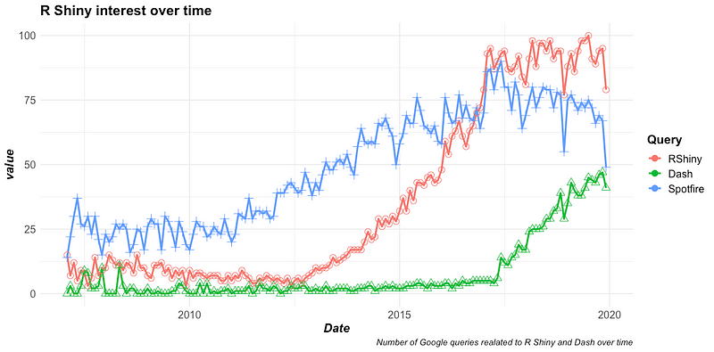
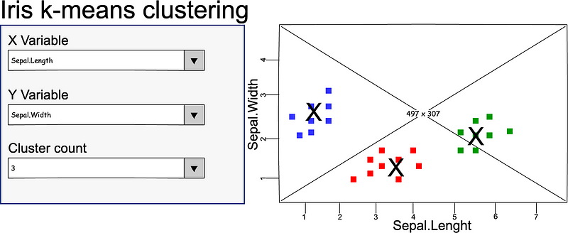

This is part 1 of a series on Shiny. Here we focus on the pre-coding phase. In the next issues we will cover the actual implementation.
Shiny is a popular framework to build interactive web apps —dashboards—. It is an R package, and its main selling point is that it makes it easy to build good looking, shareable apps. To put this in RStudio words:
“Shiny is an R package that makes it easy to build interactive web apps straight from R.” This is great. Web apps have been democratised. Anyone with average R expertise can now put together a dashboard.

Is this enough to make “good” dashboards? No, it is not. It is easy to spot the difference between something put together as a stackverflow Frankenstein’s monster and something developed by experienced people. Having Shiny is like buying a piano. You can hammer the keys and make noise, but making music is something else.Does this mean that modellers or analysts should not use Shiny? No, it does not. I encourage them to use Shiny. With some guidance, it is a great way to learn proper development. More importantly, dashboards are a great way to support decision making activities. Analysts should be empowered to produce great dashboards.
In this series we will see what we can do to step up our Shiny game.
Before you start
You had a great idea for a Shiny app. Perfect. But wait, don’t dive into coding it yet. Let’s get a small checklist in place first:
- Validate your idea
- Gather requirements
- Prototype
- UI/UX expert
It is important to notice that these steps are not a sequence. You do not have to complete a step before you can move to the next. This is a very dynamic phase, where you keep validating ideas, refining requirements, prototyping, etc.
Validate your idea
Validating your idea is critical. Does it make sense? Does it satisfy a business need? Is somebody else already working on something similar? If your idea is already partially implemented somewhere you don’t need to reinvent the wheel: add to existing tool.
Gather requirements
At this stage, gathering requirements does not have to be a formal process. You want to start by sharing your idea with people who might benefit from it. They might love your idea, but they might also ask for additions or changes. Listen to them carefully. If you don’t you will compromise the future success of your app.
Even if the process is still informal, don’t forget to make your requirements testable. You should also include both functional and non-functional requirements.
Low-fi prototype
If possible, avoid building a “working prototype” at this stage. You will find yourself bound to the code and you will struggle to make the required changes. Instead, prepare a low-fi prototype. Low-fi stands for low-fidelity. If you meet your stakeholders in the same room, use a whiteboard or post-it. If you meet remotely, use a digital board. You can also use some dedicated tools to build wireframes and mock-ups. Whatever you choose, stay vague. Avoid implementing details such as the exact colour scheme or font size. Use something very easy to change, for instance swap a post-it for another. You should focus only on core functionalities: which inputs are requireds? Which outputs are produced?

At this stage I would avoid tools like the package shinyuieditor. This package allows you to build Shiny prototypes and generate some code automatically. However, in my experience, those tools take a bit too long to get things right, defeating the purpose of a low-fi prototype. More dangerously, they generate code which might bind you to a solution too early. Save shinyuieditor for times when you need higher fidelity mock-ups.
Consult a UI/UX expert
While your functionalities and low-fi prototype mature, seek the advice of some UI/UX expert. A mistake I see many developers make is to reach out to UI/UX experts only at the latest stages of development, or flat out ignore any UI/UX input. Developers are not designers. More importantly, developers are not users, and users are not developers. UI/UX can make or break your app. UI/UX is fundamental to the success of anything that a user interacts with.
You do not need to nail every small detail right now, but get the basics down. Should you have error messages or progress bars? If so, when, where, using which style? Should you have multiple tabs? If so, how should you let the user know where they are in the app workflow?
Planning phase
Now you have some better understanding of requirements, both functional and non-functional. We can start to plan the app development. We are still not coding it, we are drafting a solution on a piece of paper, or some form of digital diagram. At this stage we want to capture things like dependencies, app components, and a minimal viable product (MVP).
Dependencies
What other systems do we need? Databases, vaults, logging platforms, etc. Put all the dependencies in a diagram, and make sure you can connect to those services.
Components
What are the main parts of the app? Figure out what are the main things you need in the UI (filters, plots, tables, etc.), and what logic should link those things. You do this exercise so that you can separate components. Draw a clear line between what is your front-end (i.e. your UI), and what is your back-end (i.e. your logic). We will see why this is important later.
Minimal Viable Product(MVP)
What is your MVP, the smaller part of the app that can bring value to the organisation? Breaking down the app in smaller jobs allows you to identify what you can implement in different iterations. Maybe you can first deliver a first version that gets a dataset, apply a model, and return some results, and this is already adding value. At a second iteration you add the ability to merge different data sources, or to use different models, etc.
A secondary benefit of this approach is that it will allow you to test how easy (or how hard) it is to change and extend your app. Is it flexible enough? Do you have hardcoded values that make it difficult to apply changes? Should you abstract some logic into more generic functions?
Finally, if you deliver in small batches you can frequently validate your app against stakeholders’ expectations.
Conclusion
Building Shiny apps seems easy. Sure, with a few lines of code you can create a dashboard. However, professional apps need more preparation. Organizations must have reliable and maintainable Shiny apps. A quick few lines of code assembled will not be good enough. You need to follow a clear plan for the development process. You need to have some requirements, and the wider the user base, the more important it is to do proper UI/UX analysis.
This might feel like you are delaying the delivery of an app you can start to work on right away. In reality, the process does not have to take that long. Even better, the time you invest now will decrease the work you will need to do to re-write your app when the inevitable “can you change just this bit” will come.
Follow me and subscribe to get notified when the next parts of this series on Shiny become available.
The best guide on building Shiny apps: Engineering Shiny.